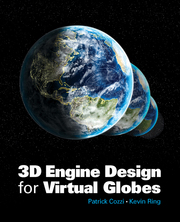

Publications and Talks

3D Engine Design for Virtual Globes, Patrick Cozzi and Kevin Ring
Published by A K Peters / CRC Press, June 2011
Topics include:
- Rendering globes, planet-sized terrain, and vector data
- Multithread resource management
- Out-of-core algorithms
- Shader-based renderer design

Under the Hood of Virtual Globes, Patrick Cozzi and Kevin Ring
Presented at COM.Geo, May 2011
A two and half hour course exploring the internals of virtual globe applications, based on our book above. The slides are available
here.